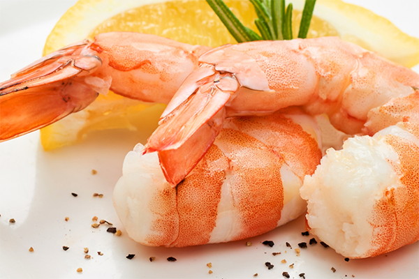
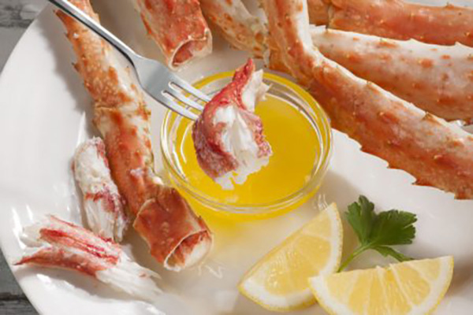
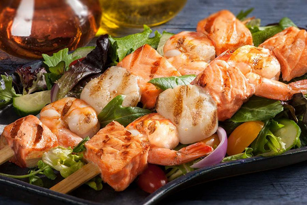
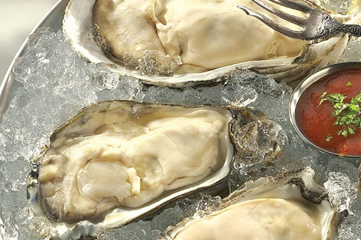
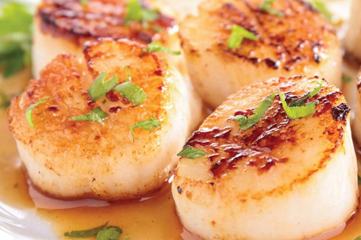
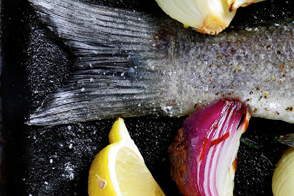

Camaron Salvaje
Los camarones Wanchese se capturan en estado salvaje en Pamlico Sound de Carolina del Norte.
Este es el extremo norte donde se pueden encontrar camarones de aguas cálidas en la costa este. En esta área de 100
millas cuadradas, el agua dulce de los ríos y el agua salada del Atlántico se mezclan para producir agua salobre. Es el
agua única que le da a los camarones un sabor dulce y una mordida más firme que los diferencia de otros camarones
silvestres y criados en granjas en el mercado actual.

Cangrejo
Cuando ya es tan bueno, no hay necesidad de meterse con la perfección. Capturados frescos en las aguas prístinas de la
costa sur de Argentina, nuestros incomparables racimos de Cangrejo Rey Rojo del Sur de la Patagonia se cocinan, lavan,
preenfrían, congelan, glasean y empaquetan a bordo de nuestro propio barco de recolección.

Mariscos
Ensarta el salmón, los camarones y las vieiras en las brochetas, dividiéndolas en partes iguales. Rocíe con el aceite y
sazone con sal y pimienta. Ase a la parrilla, tapado, hasta que el pescado esté completamente opaco, los camarones estén
rosados y las vieiras estén firmes y opacas, aproximadamente de 3 a 5 minutos por lado.

Ostras
Wanchese Fish Company cosecha ostras de la costa este en su hábitat ideal de estuarios frescos, limpios y ricos en
nutrientes que producen un sabor suave y delicado y una textura carnosa y regordeta. Ya sea que esté buscando ostras
frescas o congeladas, con concha o sin cáscara, congeladas en ½ concha, o en un contenedor o tamaño de paquete en
particular, tenemos una amplia variedad de ostras que seguramente satisfarán sus necesidades.

Vieiras
Una de las favoritas de los chefs de todo el mundo, las vieiras se encuentran entre las variedades de mariscos más
dulces y tiernas. Son rápidos y fáciles de preparar. Saltee o cocine a la parrilla y luego agregue a su pasta y
vegetales favoritos para una comida saludable y deliciosa en minutos.
Las vieiras de Wanchese se recolectan de las frías aguas del Atlántico y frente a las costas de Argentina. Están
disponibles en paquetes frescos y congelados para aplicaciones de servicio de alimentos y minoristas.

Pescado Fresco y congelado
Con innumerables tipos de pescado en el mercado actual, Wanchese enfrenta el desafío de proporcionar una fuente
constante de alta calidad de pescado fresco y congelado. Nuestros filetes cortados a mano totalmente naturales y el
pescado entero se pueden pedir cortados a medida según las especificaciones del cliente. Wanchese cosecha más de 80
especies de peces de las frías aguas del Atlántico Medio. Muchas variedades están disponibles frescas en temporada y
ultracongeladas en su punto máximo de frescura durante todo el año. Ya sea que se sirva rebozado o al horno, a la
parrilla o relleno, el pescado brinda una fuente inagotable de opciones de menú para que regrese por más.